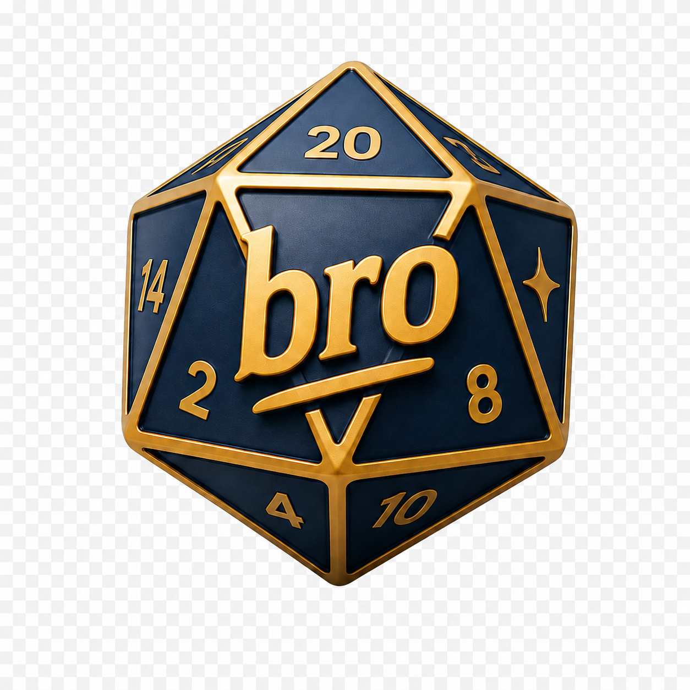

Broodle
LIVEBroodle is a Doodle-style availability poll built for planning game nights with friends, without the usual twenty crossed messages.
What you can do
- Create a poll by picking a date range
- Share it with a short link
- Vote per day: yes, maybe, or available at a specific time
- See the top 3 best days as soon as the first votes come in
Broodle is open source, bilingual (Italian and English), and built mobile-first.